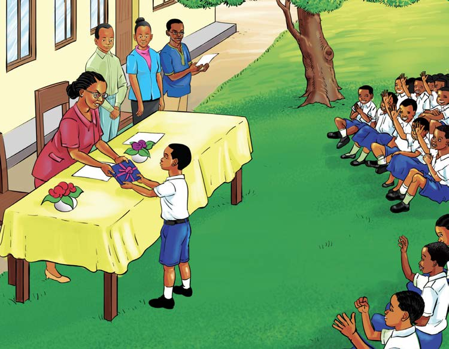

Ufahamu
Soma habari hii, kisha jibu maswali yanayofuata.
Fabu apata zawadi
Fabu, Bera na Raja ni wanafunzi wanaosoma katika Shule ya Msingi Ngindo. Wote wanasoma Darasa la Tano. Wanafunzi hawa wanaishi katika kijiji kimoja kilichopo karibu na shule yao. Fabu ni bingwa wa kuamka mapema kuliko Bera na Raja. Huamka saa 11:00 alfajiri kila siku. Hivyo, mara nyingi huwahi shuleni kuliko wenzake. Kila anapofika shuleni, huwahi namba, kisha kuanza kufanya usafi wa eneo lake. Eneo lake huonekana safi wakati wote. Pia, huwahi kurudi nyumbani mara tu baada ya kuruhusiwa shuleni. Vilevile, Fabu anawaheshimu na kuwatii wazazi, walimu na watu wote. Tofauti na Fabu, Bera na Raja huchelewa kuamka. Hivyo, huchelewa kufika shuleni na mara nyingi hukosa namba. Maeneo yao ya shuleni huonekana machafu kila siku. Wakati mwingine, hukuta vipindi vimeanza. Baada ya kumaliza vipindi, huchelewa kurudi nyumbani. Kutokana na tabia yao, mara nyingi hupewa adhabu. Fabu anasikitishwa sana na kitendo hicho. Kwa sababu hiyo, anaazimia
moyoni kwamba siku moja atawauliza wenzake kwa nini huchelewa shuleni.
Siku moja Fabu, Bera na Raja wakiwa njiani kuelekea nyumbani, Fabu aliamua kuuliza swali lake lililokuwa likimsumbua kwa muda mrefu, “Marafiki zangu, kwa nini huwa mnachelewa kufika shuleni?” Bera na Raja, wakiwa wametazamana, walimjibu kwa dharau, “Heee! Wewe vipi? Kwa nini unauliza?” Fabu alijibu kwa upole, “Samahani, kama nimewaudhi. Nilitaka kujua kwa sababu mara nyingi ninaona mnapewa adhabu. Kwani ninyi mnapenda adhabu?” Kusikia hivyo, Bera na Raja walitazama chini kisha wakajibu kwa pamoja, “Hapana! Ila huwa tunachelewa kuamka.” Fabu aliwaonea huruma akawaambia kuwa kesho yake atawapitia asubuhi na mapema. Bera na Raja walikubali.
Siku iliyofuata, Fabu aliamka mapema na kwenda kuwapitia wenzake kama alivyoahidi. Waliongozana kuelekea shuleni. Wakiwa njiani, walikutana na mzee mmoja akiwa na ng’ombe. Jina lake ni Mzee Shibuni. Fabu alimsalimia; Bera na Raja hawakumsalimia. Mzee Shibuni aliwatazama akasema, “Nyie wanangu, mbona hamnisalimii? Muwe na adabu kama Fabu.” Bera na Raja walinyamaza kimya. Mzee Shibuni aliamua kuondoka na ngo’mbe wake. Wakati anaondoka wote wawili walisema kwa kugugumia, “Tu…tu…tusamehe mzee”. Baada ya muda mfupi, waliwasili shuleni. Walipata namba, kisha wakaenda kufanya usafi kwenye maeneo yao. Siku hiyo, Bera na Raja hawakupewa adhabu. Walimshukuru Fabu kwa kuwapitia mapema.
Kadiri siku zilivyosonga, Fabu aliendelea kuwa mtiifu, mwenye adabu na bidii katika masomo yake. Kutokana na bidii na tabia yake njema, Fabu alikuwa akifanya vizuri katika masomo yake. Walimu walimpenda sana kutokana na bidii katika masomo na tabia yake njema. Hivyo, Fabu alisifika sana shuleni hapo kwa usafi, nidhamu bora, na kufanya vizuri katika masomo yake. Kwa kuwa shule yao ilikuwa inasisitiza masuala hayo, ilikuwa inatoa zawadi kwa wanafunzi wanaofanya vizuri katika maeneo mbalimbali wakati wa kufunga shule.
Siku ya kufunga shule ilipowadia, wanafunzi na walimu walikusanyika pamoja. Ulipofika wakati wa kutoa zawadi, Mwalimu Mkuu alianza kusoma majina ya wanafunzi waliofanya vizuri. Wanafunzi mbalimbali walipewa zawadi. Fabu, tofauti na wanafunzi wengine, alijipatia zawadi tatu tofauti. Mwalimu Mkuu alimtaja Fabu kuwa ndiye aliyeongoza katika: nidhamu, usafi, na ufaulu kwenye masomo yote.

Wanafunzi wenzake na walimu walimshangilia kwa nderemo na vifijo kwa kupata zawadi hizo. Mwalimu Mkuu alimuusia Fabu aendelee kufanya hivyo na wengine waige mfano wake. Fabu alifurahi sana na aliendelea kuwa na bidii siku zote.